Ukážte dom skôr, než ho postavíte.
Ukážky vytvorené len z projektovej dokumentácie – exteriér, interiér, prechádzka a VR prehliadka.
3-izbový byt v novostavbe · cca 70 m²
Ukážkový byt, orientačná dispozícia. Kupujúci si byt prejde ešte pred dokončením stavby – obývačka s kuchyňou, spálňa aj kúpeľňa.
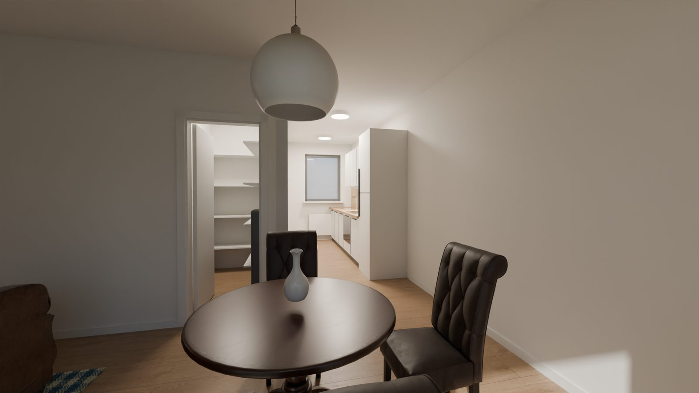
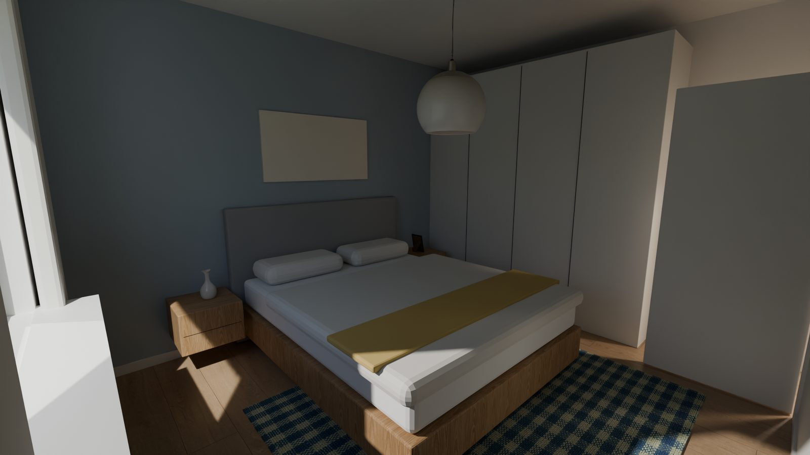
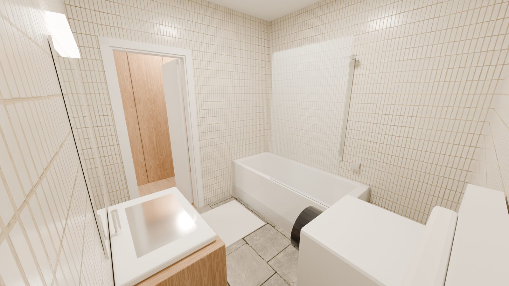
Prechádzka bytom
Prechádzka obývačkou s kuchyňou, spálňou aj kúpeľňou – ako by kupujúci stál priamo v byte.
Spustiť prehliadkuPozrieť 3D model
Na prehliadku stačí mobil alebo počítač – VR okuliare sú voliteľné.
Bungalov ~100 m²
Ukážkový projekt, orientačná dispozícia. Bungalov s valbovou strechou – obývačka s kuchyňou a ostrovčekom, 3 spálne, kúpeľňa, WC a terasa.
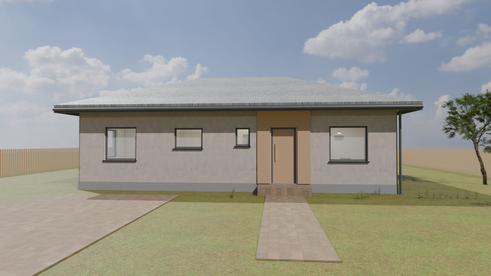
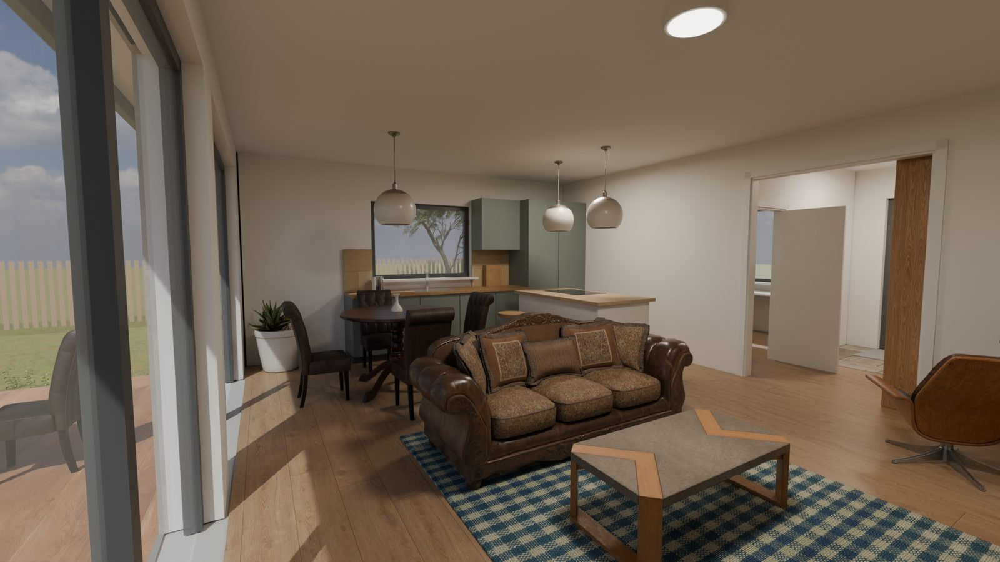
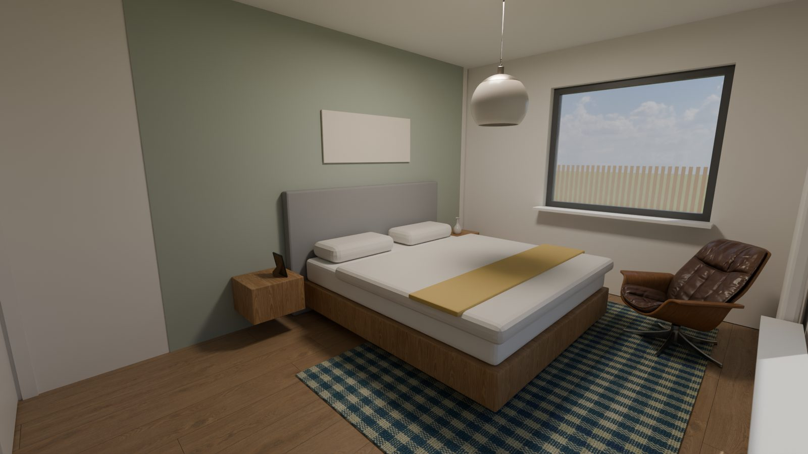
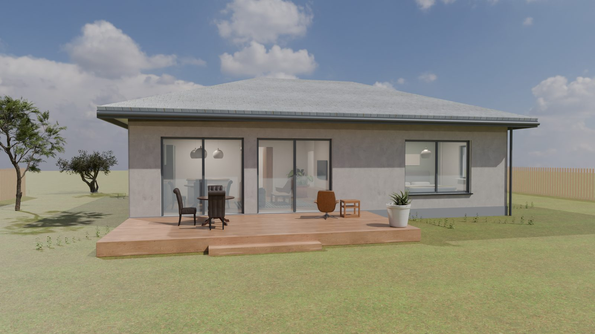
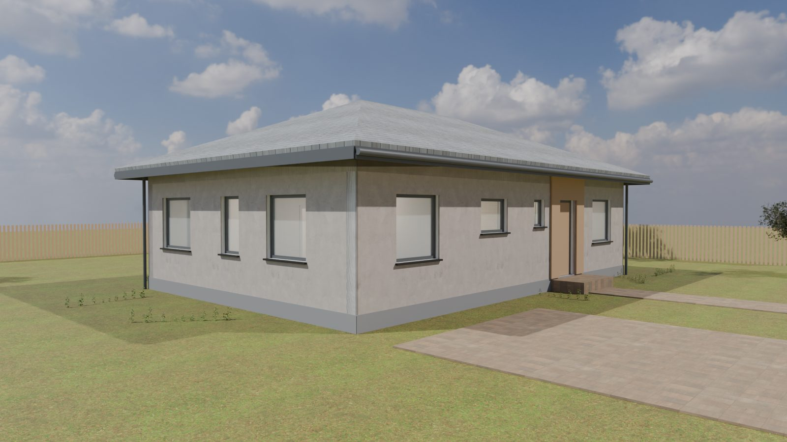
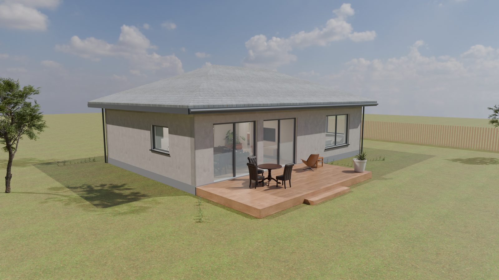
Futuristický dom – ukážka dizajnu
Jednopodlažná vila so zaobleným presklením, konzolovou strechou so zelenou plochou, terasou a bazénom. Minimalistický interiér s obývačkou, kuchyňou s ostrovčekom, jedálňou, spálňou a kúpeľňou.
Ide o náš vlastný ilustračný koncept dizajnu, nie o architektonický projekt. Rozmery, materiály aj zariadenie sú len orientačné a neslúžia ako podklad na stavbu.
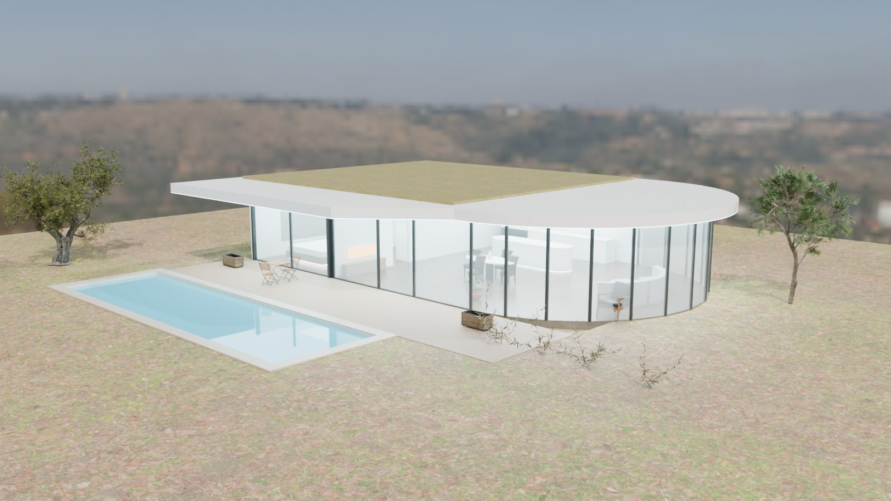
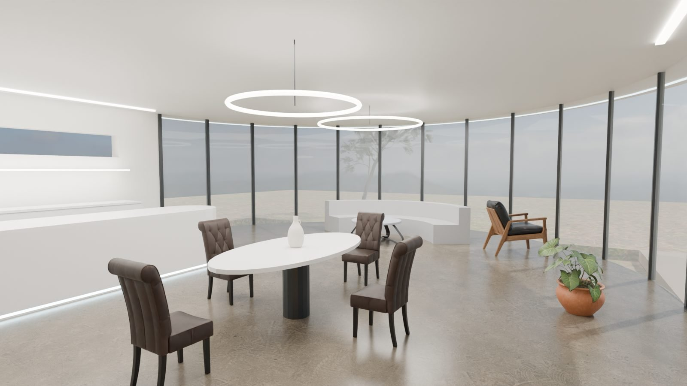
Spustiť prehliadkuPozrieť 3D model
Na prehliadku stačí mobil alebo počítač – VR okuliare sú voliteľné.
Prírodný dom – ukážka dizajnu
Prízemný dom v tvare písmena U okolo átria so stromom a jazierkom. Zelená strecha, kamenná severná stena, drevený obklad a veľké trojsklá do átria. Obývačka s kuchyňou a jedálňou, dve izby, hlavná spálňa, kúpeľňa a južná terasa pod presahom strechy.
Ide o náš vlastný koncept dizajnu, nie o architektonický projekt. Navrhli sme ho s ohľadom na reálne stavebné možnosti, no pred stavbou ho musí spracovať a posúdiť autorizovaný architekt a statik.
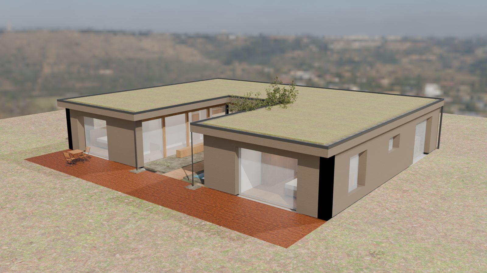
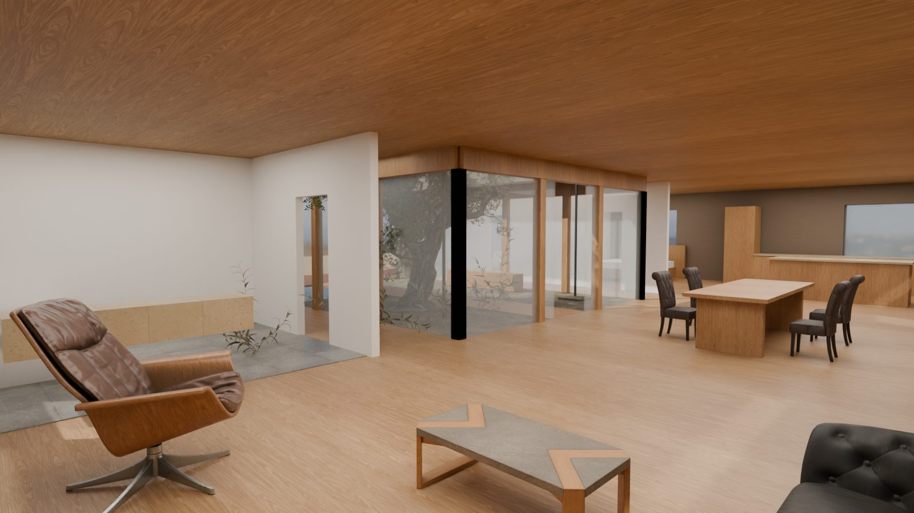
Technické poznámky k realizovateľnosti
- Konštrukcia: obvodové steny z keramických tvárnic alebo drevostavba, spolu s izoláciou a obkladom asi 45 cm. Strop tvoria panely CLT s rozponom 6 m, ktoré sú zospodu priznané ako drevený strop. Presklené steny do átria nesú lepené drevené (BSH) prievlaky na stĺpikoch vo vzdialenosti najviac 2 m.
- Strecha (spolu asi 45 cm): CLT 200 mm, parozábrana, spádová tepelná izolácia (sklon asi 2 %), hydroizolácia odolná voči prerastaniu koreňov, drenážna a filtračná vrstva a 8–10 cm substrátu so sukulentmi a lúčnymi bylinami. Po obvode je oplechovaná atika a kačírový pás, voda odteká do žľabov a cez dažďové reťaze do vsakovacích jám v átriu.
- Tienenie a energia: presahy strechy 0,6–0,9 m tienia v lete vysoké slnko, v zime pustia nízke slnko dnu. Trojsklá, vetranie s rekuperáciou a teplovzdušné kachle v obývačke.
- Základy a odvodnenie: základová doska na izolácii zo štrku z penového skla, kamenný sokel, drenážny pás okolo domu, terasa z drevených dosiek na rektifikačných terčoch.
- Materiály: lokálny kameň, smrekovcový obklad, dubové podlahy, vápenné omietky.
Spustiť prehliadkuPozrieť 3D model
Na prehliadku stačí mobil alebo počítač – VR okuliare sú voliteľné.